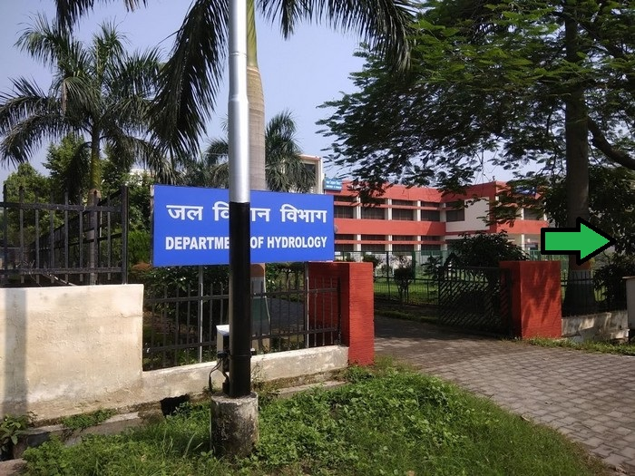

|  |
AboutThe Department of Hydrology is one among the 21 academic departments of the Indian Institute of Technology Roorkee. The Department came into existence with the inception of the International Post Graduate Course in Hydrology in 1972, being the first such a programme in a developing country. The courses, offered by the Department are presently sponsored by the Government of India and the UNESCO. The Department has seven dedicated full time faculty members having specializations in surface water hydrology (Floods, Droughts), water resources systems, watershed management, Geo-hydrology, ground water geophysics, stochastic hydrology, hydro-informatics, environmental hydrology etc. |
Click on the arrow to move forward.